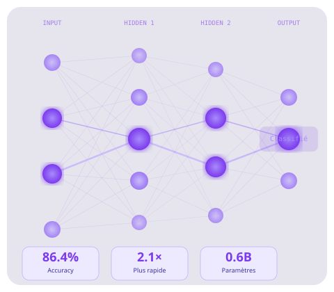

ML Engineer · Développeur Agents IA
Spécialisé en fine-tuning de modèles de langage, architecture multi-agents et pipelines RAG. Chez Little John, j'ai fine-tuné un SLM open-source (Qwen3-0.6B) qui surpasse GPT-4o-mini en classification documentaire tout en étant 15× plus léger — et conçu une architecture d'agents qui réduit le temps de traitement de 1 semaine à moins d'1 heure.

Little John est une insurtech qui construit le premier espace de travail IA pour courtiers d'assurance indépendants. Recruté en stage de fin d'études ENSAI pour structurer et industrialiser les pipelines ML/AI, puis embauché en CDI.
Stage au CREST (ENSAI). Analyse de l'évolution de l'offre de compétences des développeurs à partir des enquêtes Stack Overflow (2017–2023). Application de techniques NLP avancées sur données massives.
Automatiser la classification de documents entrants (contrats, factures, formulaires, identités). Fine-tuner un petit modèle sur corpus métier pour dépasser les LLM généralistes à moindre coût.
Concevoir des workflows d'agents IA capables d'orchestrer des tâches complexes de façon autonome et parallèle, avec des garanties de structure grâce à Pydantic.
Construire des systèmes de recherche sémantique sur corpus documentaire propriétaire. Permettre à un LLM de répondre sur des documents internes, avec traçabilité des sources.
Passer d'un POC à un service ML en production : Docker, CI/CD, monitoring des performances, versionnement des modèles, conformité RGPD.
Extraire de la valeur de données textuelles non structurées : classification, extraction d'entités, analyse de sentiment, clustering thématique dans de grandes bases documentaires.
Déployer des SLM fine-tunés localement pour des performances comparables aux grands modèles, sans dépendance cloud — pour les secteurs réglementés (santé, finance, défense).
Formation d'ingénieur data scientist de niveau master. J'y ai acquis une maîtrise approfondie du machine learning supervisé et non supervisé, des réseaux de neurones, du NLP, et des méthodes de validation des modèles. La double compétence économétrie + ML m'a permis de concevoir des solutions rigoureuses et deployables. Stage de fin d'études chez Little John, débouchant sur un CDI.
Formation qui m'a donné les fondements mathématiques indispensables à un bon ML Engineer : probabilités, statistique inférentielle, algèbre linéaire, optimisation. L'initiation au ML et au big data m'a permis de comprendre les algorithmes à niveau fondamental.
Disponible pour des missions en ML Engineering, AI Engineering, développement d'agents IA ou industrialisation de pipelines ML.